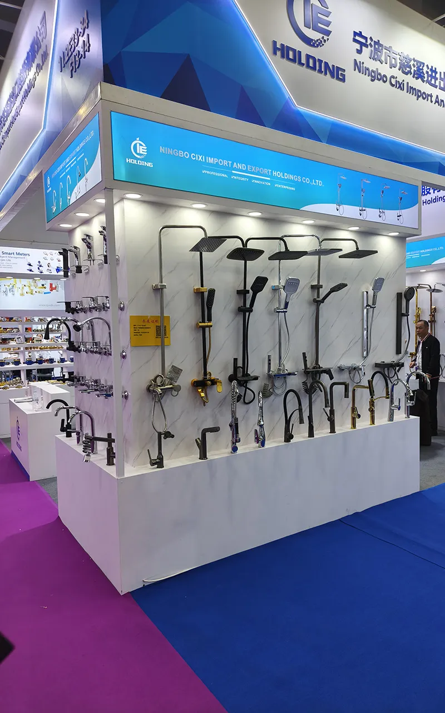
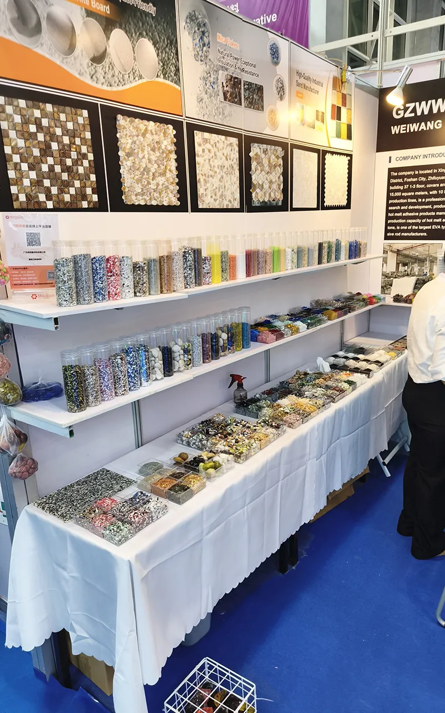

Factory visits are the fastest way to separate serious suppliers from talk. I arrange tours in Guangdong, Foshan, Zhejiang, and across China — accompany you during visits, translate conversations, and help you assess if each factory is the right fit for your business.



From trade show booths to actual factory floors — I help you see the difference
Suppliers send polished photos, professional videos, and impressive presentations. But product photos can be from other factories. Certifications can be borrowed. Claims can be exaggerated. The only way to truly verify what you're working with is to see it yourself.
See actual production lines, assembly areas, and worker count. Photos can hide small facilities. Your eyes can't be fooled about the actual scale of operations.
Inspect QC stations, testing equipment, and quality processes. How a factory handles quality control tells you everything about their defect rates.
Factory owners and managers behave differently when you're standing in front of them. You'll see who you're actually negotiating with — not just a salesperson in a showroom.
Check original certification documents, not just photos. CE, FCC, ISO, BSCI — real factories keep originals on hand. Fake certifications often reveal themselves when you ask to see the originals.
After 200+ factory visits, I know exactly what to check. Here's what a proper factory assessment looks like.
Factory building size and condition, parking and loading areas, proximity to ports or airports, overall professionalism of the facility. Red flags: run-down buildings, inconsistent facilities, locations that don't match claimed production capacity.
Number and condition of production equipment, worker count during visit, production flow organization, automation level, current utilization rate. Red flags: equipment that's too new or too old, workers who seem surprised to see visitors, empty production floors.
QC stations and procedures, testing equipment on-site, defect tracking systems, inspection documentation. Red flags: no visible QC process, broken testing equipment, no documentation of quality issues.
Sample quality and variety, design and development capabilities, customization options, new product development process. Red flags: sample room that looks like a museum (no recent samples), no R&D area, samples that don't match the factory's claimed specialization.
Manager's knowledge of production processes, responsiveness to questions, willingness to show documentation, alignment between claims and reality. Red flags: managers who can't answer technical questions, constant redirection to salespeople, contradictory information.
Not every sourcing decision requires a factory visit. But for these situations, seeing is believing.
Large orders, brand reputation at stake, product defects mean negative reviews. First-time FBA sellers especially benefit from seeing production quality before committing to inventory.
Custom branding means long-term commitment. Visiting factories for private label projects helps verify that the factory can handle your specifications consistently.
Your brand reputation depends on product quality. Factory visits help you assess whether suppliers understand and align with your brand values.
Orders over $10,000+ deserve verification. Factory visits help you assess whether suppliers can handle your order volume before you wire large deposits.
Tell me what you're sourcing, your timeline, and where you'd like to visit. I'll coordinate factory visits throughout Guangdong and beyond.